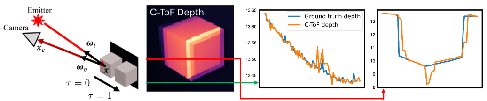
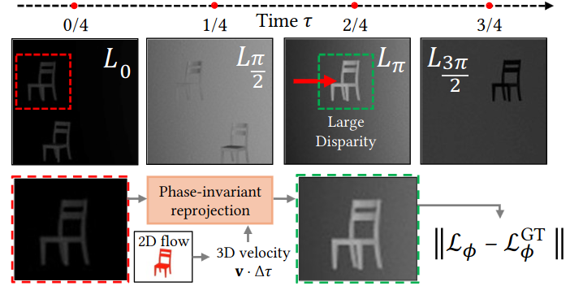

Flowed time of flight radiance fields (F-TöRF) is a method to correct for motion artifacts in continuous-wave time of flight imaging (C-ToF).
As C-ToF cameras must capture multiple exposures over time to derive depth, any moving object will exhibit depth errors.
We formulate an optimization problem to reconstruct the raw frames captured by the camera via an underlying 4D volumetric scene and a physically-based differentiable C-ToF simulator.
With weak optical flow supervision, we can infer a 3D volume with scene flow that explains the raw captures, even though any particular time instant does not provide sufficient constraints upon the depth or motion.
On synthetic sequences, we find that our approach reduces depth errors on dynamic objects by up to 20× compared to C-ToF, particularly for axial motions and large disparities (≥ 25 pixels) between raw frames.
On real-world sequences, we see qualitatively similar gains with artifacts resolved on falling pillows and swinging baseball bats.
Problem
C-ToF's imaging model assumes that scenes and the camera are static: as we must estimate the phase offsets from multiple frames, depth is inaccurate if anything moves, causing large errors such as ghosting or blurring under fast motion.
This affects objects with motions relative to the camera, and also any motions of the camera itself relative to the scene - static or otherwise - such as handheld motions of a smartphone. See the example below.

The cube’s motion (left) invalidates C-ToF algorithm assumptions. Depth is derived both from light reflected from the cube and background, causing ghosts to appear(center). Right: C-ToF depth along the red and green lines, showing discrepancies.
Our Proposal
To correct for the ToF moving objects artifacts we propose to learn 3D scene flow and use it to reproject the scene at time moments aligned with desynchronized ToF exposures. We call this phase-invariant reprojection.
As a side effect of this approach, we can also temporally upsample the video at arbitrary rate.

The four raw frames captured sequentially over time τ
(top) show large brightness differences due to the emission phase. The large disparity
on moving objects causes depth artifacts. Recovering a 4D scene representation with
help from 2D optical flow lets us correctly reproject one timestep onto another in a
phase-aware way, such that we can supervise the scene at fractional time moments.
Video
Bibtex
@inproceedings{okunev2024flowed,
title={Flowed Time of Flight Radiance Fields},
author={Okunev, Mikhail and Mapeke, Marc and Attal, Benjamin and Richardt, Christian and O’Toole, Matthew and Tompkin, James},
year={2024},
organization={European Conference on Computer Vision}
}
Supplemental video results
Note: This page has 100+ videos. Each set of results will show/hide through a button to ease the burden on the browser.
Index
Datasets
Acknowledgements
Mikhail Okunev and James Tompkin thank NSF CAREER 2144956 and Cognex. Marc Mapeke acknowledges support from a Jack Kent Cooke Foundation scholarship, and Benjamin Attal from a Meta Research PhD Fellowship. Matthew O'Toole thanks NSF CAREER 2238485.